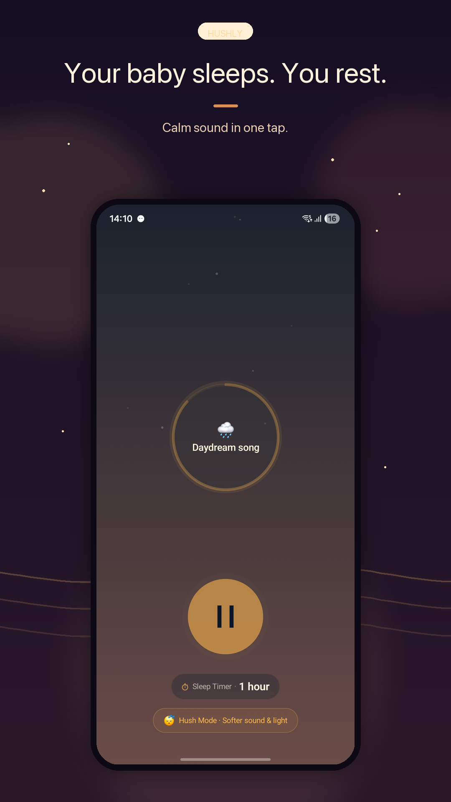
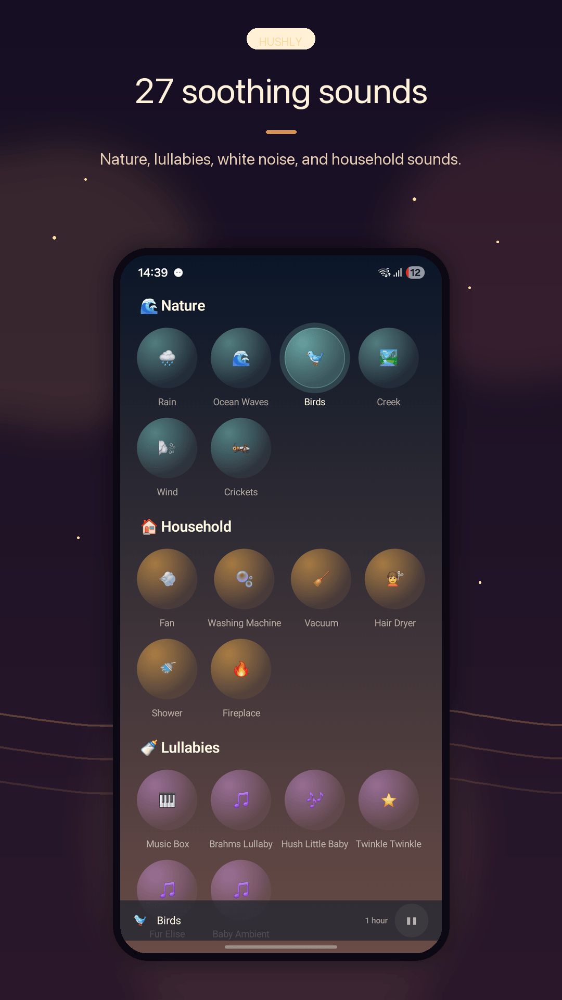
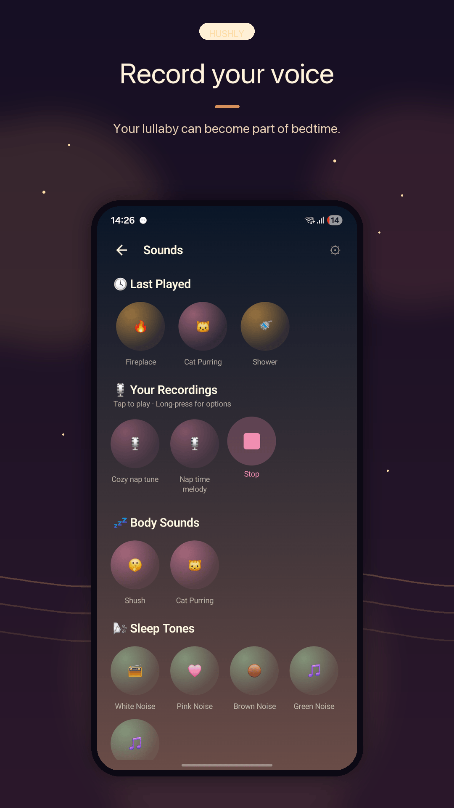
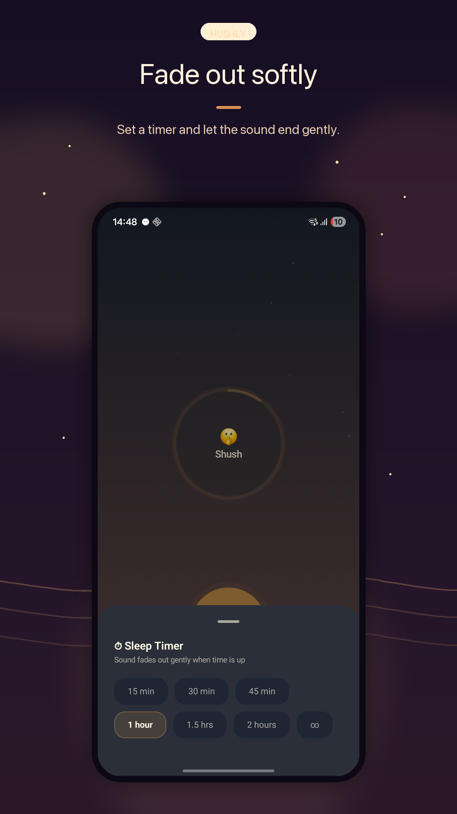
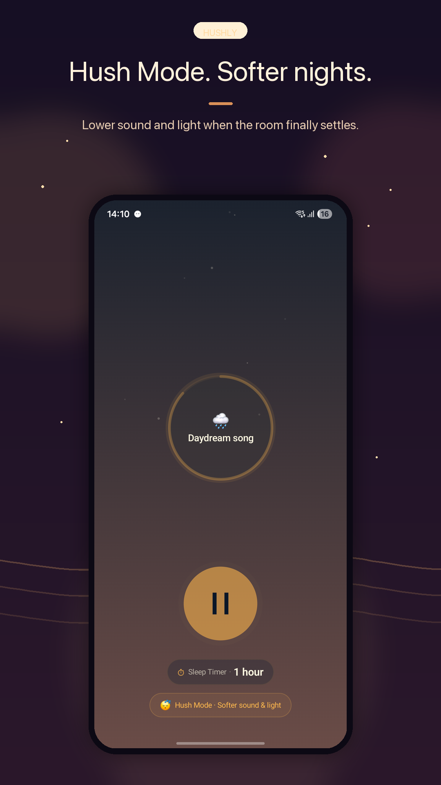
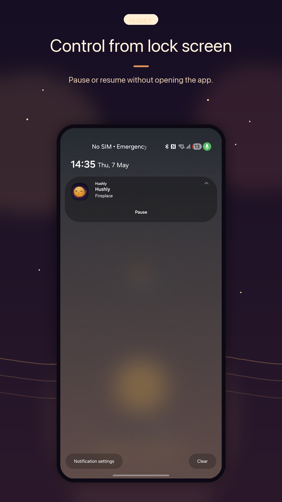
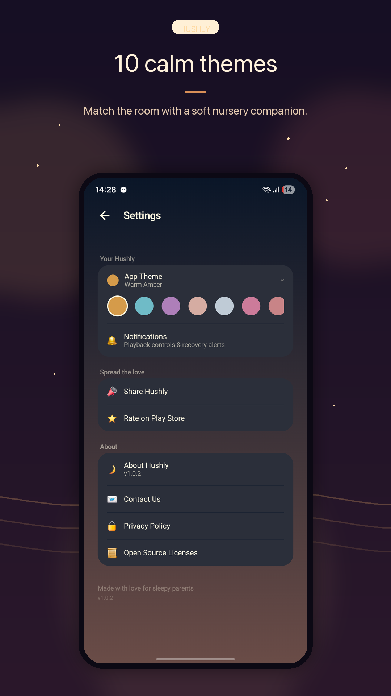

Hushly — Baby Sleep Sounds
Hushly — Baby Sleep Sounds
Soothing sounds to help your baby (and you) sleep peacefully. One-handed, dark-room friendly. Built for exhausted parents at 2am.
Screenshots







Why Parents Love Hushly
Curated Sound Library
White noise, rain, ocean waves, lullabies, and more. Every sound carefully selected to help babies sleep.
Indian Lullabies
The only baby sleep app with regional Indian lullabies. No other competitor offers this.
Night Light
Built-in soft night light for late-night feeding or diaper changes. No need to turn on harsh room lights.
Sleep Timer
Set a timer and fall asleep with your baby. Sounds fade out gently so nobody wakes up.
One-Handed Use
Designed for parents holding a baby. Large tap targets, simple gestures, no fiddly menus.
Auto-Resume Last Session
Open the app and your last sound starts playing instantly. No browsing needed at 2am.
Battery Optimized
Smart handling of battery optimization on Samsung, Xiaomi, OnePlus, and other Android phones.
Zero Ads, Ever
No ads interrupting your baby's sleep. No banner at the bottom. No video to watch. No tricks.
Help Your Baby Sleep Better Tonight
Free to download. No ads. No subscriptions. Just peaceful sleep.
▶ Download HushlyFrequently Asked Questions
Is Hushly completely free?
Yes. Hushly is 100% free with no ads, no subscriptions, and no in-app purchases. It will never have ads.
Does Hushly work without internet?
Yes. All sounds are bundled in the app and play offline. No internet connection is needed.
Is white noise safe for babies?
Research shows white noise at moderate volumes (under 50 dB, placed away from the baby) can help infants fall asleep faster and sleep longer. The AAP recommends keeping sound machines at low volume and at least 200 cm from the baby.
Does Hushly have a sleep timer?
Yes. Set a timer for 15, 30, 45, or 60 minutes, or let sounds play continuously until you stop them.
Can Hushly play sounds in the background?
Yes. Hushly continues playing when you lock your phone or switch to other apps, with minimal battery usage.
What sounds does Hushly include?
White noise, pink noise, rain, ocean waves, fan sounds, shushing, heartbeat, and Indian lullabies. New sounds are added with updates.
Does Hushly collect any data?
No. Hushly does not collect, store, or transmit any personal data. There is no account, no analytics, and no data sharing.
Related Articles
-
The Science Behind White Noise and Baby Sleep
Why babies sleep better with white noise. The research, white vs pink noise, and safe volume tips.
-
Why Your Baby Won't Sleep Through the Night
Night waking is normal. Learn about sleep cycles, settling techniques, and when it gets better.